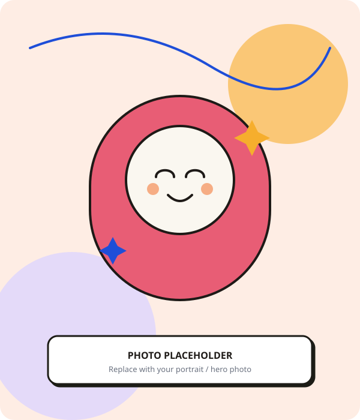
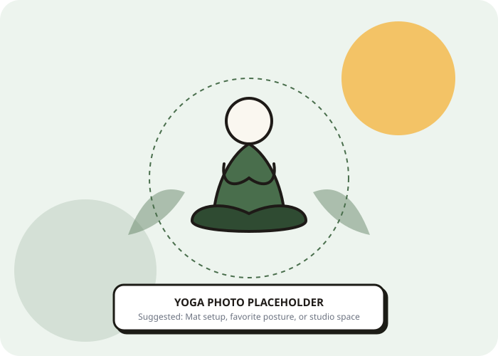
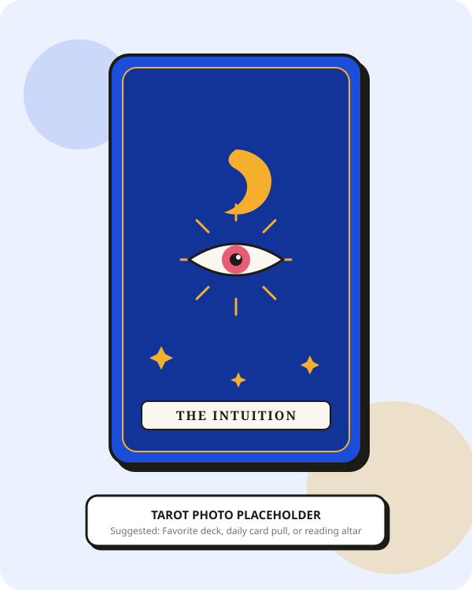
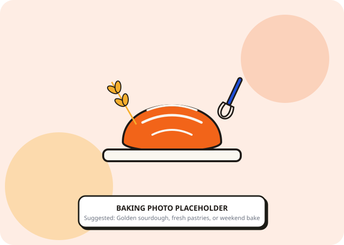
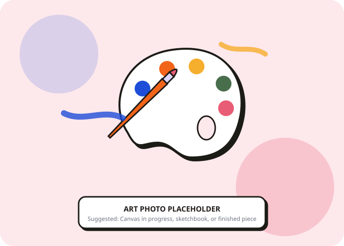
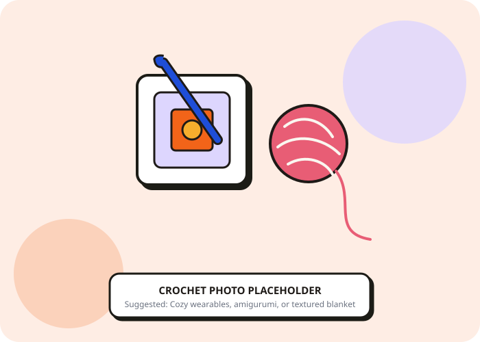
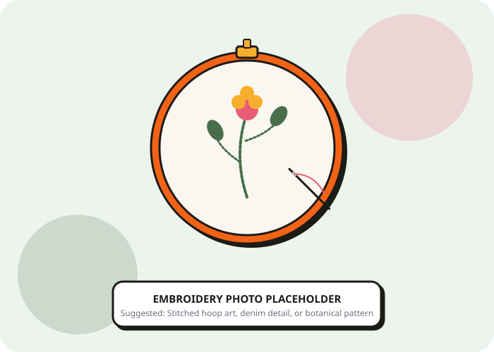

This is where I keep the parts of my week that never make it onto a resume.
The technique behind a painting I almost didn't finish. The bread that didn't rise the first four times. The tarot spread I still think about a year later.

Pradheepa Ramasundaram
Practitioner & Maker
I Started This Because I Kept Forgetting Who I Am Outside of Work
My days are full of color and texture: pigment bleeding into wet paper, a row of double crochets multiplying under my hook, a needle catching the light mid stitch. A spread of tarot cards fanned out before I've decided what I'm actually asking them. A loaf of dough breathing under a towel on the counter. My body folded into a stretch that finally stops arguing with me. Making something with my hands is how I remember I am allowed to exist outside of being useful, that I get to have a life that belongs only to me, seams and stitches and unfinished paintings included. This is proof, mostly to myself, that there is more to me than what fits inside a job description.
My body and me
I started practicing because someone told me it would fix my posture, and stayed because it turned out to fix something else entirely. A yoga class once held me in one stretch long enough that I stopped performing calm and actually felt it. Some days I move fast because my body is loud and needs to be tired out. Some days I move slow because my mind will not stop talking and the only way through is to give it somewhere quieter to sit.
Learn the basics: Surya Namaskar →Ready to ground
A 60-second box breathing pause to center yourself.


A card is finding its way to you
THE STAR
Major Arcana XVII: Hope & Inspiration
"Trust the quiet intuition guiding your path. Open your creative floodgates."
Whispers from the universe
Tarot found me in a year when I was making decisions I could not fully explain to anyone, including myself. That said, I do not read cards to know what happens next. I read them because laying out a spread forces me to sit with a question long enough to finally hear my own answer underneath all the noise. My first deck, Rider Waite, is falling apart at the corners now. I love it more for that.
Learn tarot with me: TarotQuest →Bread Taught Me a Patience I Didn't Have Before
My starter has survived two house moves and one heatwave that nearly took us both out. Feeding it, folding the dough, waiting for a rise that refuses to be rushed, all of it has taught me a patience I did not have before, one I still do not have anywhere else in my life.
"My first three loaves came out looking like pale bricks, dense enough to prop open a door. The day I finally pulled out a boule with a proper blistered crust and an open crumb, I took a photo of the cut slice before I ate any of it. That photo is still my phone background."

Give Me Any Medium and I'll Find a Way In
I don't really care what the medium is, I just want color or ink in my hands somehow. Oil pastels, acrylic paint, watercolour, whatever's closest on a given day gets used. Lately I've been circling two new things I haven't fully committed to yet: gold foil painting and linocut printing, both still very much in the fumbling around stage.
"I painted my way through one gray February by mixing olive green with every warm color I owned, coral, rust, a strange dusty pink I still can't replicate, whatever medium happened to be closest at the time. None of those paintings were good. All of them got me through a month that felt like it was never going to end."
"My first linocut print came out so lopsided I gave it to a friend as a joke, and she framed it anyway. That print still embarrasses me a little, and I haven't worked up the nerve to ask for it back."

Fiber Arts: Crochet & Embroidery
Slow, deliberate stitches that turn thread into cozy textures and detailed botanical tapestries.
I Haven't Finished a Single Thing Yet
I picked up a hook a few months ago after watching one too many crochet videos and deciding it looked like something my hands could do. It is teaching me humility fast. I have started and ripped out more granny squares than I can count, still get single and double crochet mixed up under pressure, and have yet to finish a single project all the way to the end. I'm keeping at it anyway, mostly because I like it even when it's going badly.
"My first attempt at a granny square came out looking more like a triangle. I still have it in a drawer somewhere, refusing to throw it away."

Something I Make to Give Away
Embroidery is the one craft where I actually follow a pattern instead of making it up as I go. I like sitting with a guided design, working through it stitch by stitch, and watching something recognizable slowly show up in the hoop. Most of what I make doesn't stay with me for long. I finish a piece and it becomes someone else's, wrapped up and handed over before I've even fully admired it myself.
"I embroidered a small hoop of wildflowers for a friend's birthday last year, followed the pattern almost exactly, and she cried a little when she opened it. That reaction is the whole reason I keep doing this."

Proof I Can Sit Still for More Than Ten Minutes
I read to leave wherever I currently am for a while. Fiction mostly, whatever pulls me in fastest, though I go through phases: a mystery binge, a memoir stretch, one summer where I read nothing but retellings of Greek myths. My Goodreads is a mess of five-star ratings I gave in the heat of the moment and to-read shelves I will never actually get through, and I love it exactly as it is.
Find me on Goodreads →"I once finished a book in one sitting because I could not stand not knowing how it ended, then stayed up far too late doing the exact same thing again a week later with a different book."
Smaller Things I Am Currently Obsessed With
A running list of the smaller rabbit holes I fall into between the bigger practices above. Some of these stick around for years. Some last exactly one stretch of a season.